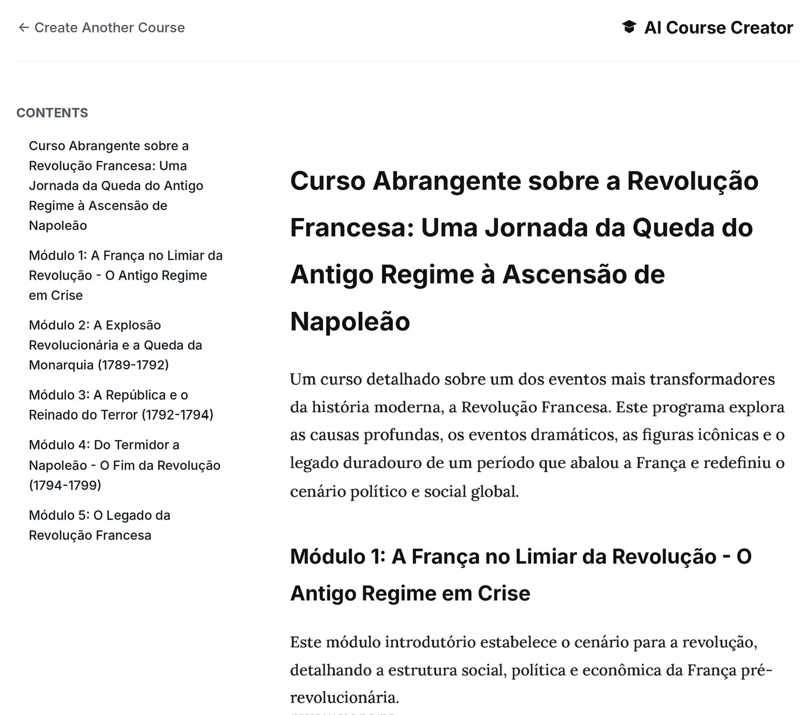
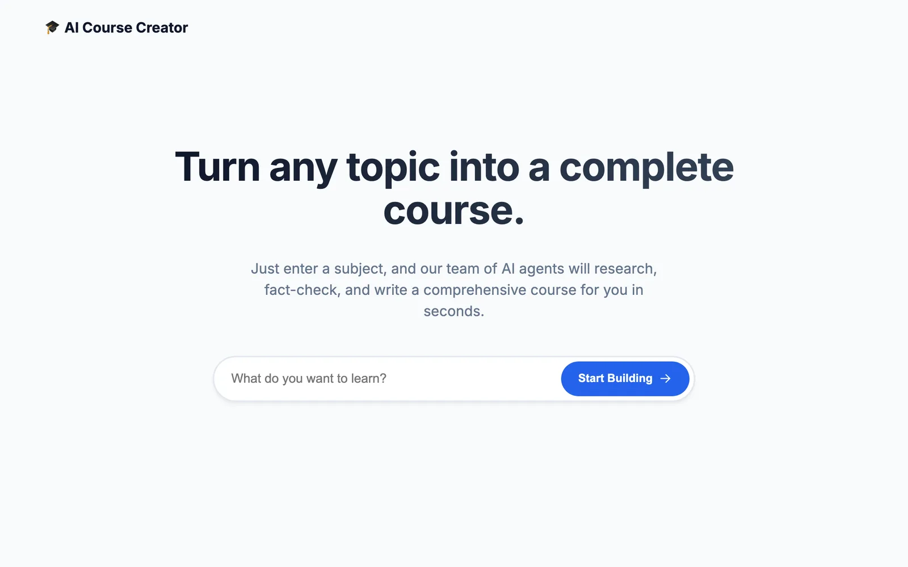
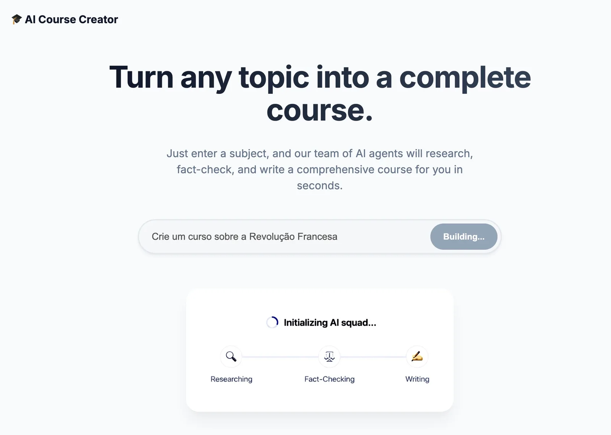

IA · Sistema multiagente
AI Course Creator
Um time de agentes de IA que pesquisa, checa os fatos e escreve um curso estruturado sobre qualquer tema. Desenvolvido no laboratório Build with AI do Google Cloud.


Objetivo e proposta
Transformar um pedido simples, como “crie um curso sobre a Revolução Francesa”, em um curso completo, com módulos e tópicos, a partir de uma pesquisa revisada antes de ser escrita.
O projeto mostra uma arquitetura de agentes pronta para produção: cada agente roda como um microsserviço independente, eles se comunicam por um protocolo padrão e tudo é publicado no Cloud Run.
Funcionalidades
- 01
Pesquisador
Agente que pesquisa o tema usando a ferramenta de busca do Google.
- 02
Juiz
Avalia a pesquisa e devolve “pass” ou “fail” com feedback em saída estruturada (Pydantic). Se reprovar, o pesquisador tenta de novo, até 3 vezes.
- 03
Redator
Transforma a pesquisa aprovada em um curso com título, módulos e tópicos, no idioma do pedido.
- 04
Orquestrador
Coordena o fluxo com LoopAgent (pesquisa ↔ juiz) e SequentialAgent (pesquisa → escrita).
- 05
Interface web
Site em FastAPI com o progresso de cada etapa transmitido em tempo real e o curso exibido com índice lateral navegável.
Exemplo de saída
Pedido“Crie um curso sobre a Revolução Francesa”
Curso Abrangente sobre a Revolução Francesa: Uma Jornada da Queda do Antigo Regime à Ascensão de Napoleão
- Módulo 1: A França no Limiar da Revolução - O Antigo Regime em Crise
- Módulo 2: A Explosão Revolucionária e a Queda da Monarquia (1789-1792)
- Módulo 3: A República e o Reinado do Terror (1792-1794)
- Módulo 4: Do Termidor a Napoleão - O Fim da Revolução (1794-1799)
- Módulo 5: O Legado da Revolução Francesa
Destaques técnicos
- Cada agente é um microsserviço com Dockerfile próprio, e eles conversam pelo protocolo A2A (Agent-to-Agent).
- Saída estruturada e validada no agente juiz, o que permite decidir o fluxo em código, sem interpretar texto livre.
- Scripts para subir tudo localmente e publicar os serviços no Cloud Run.
Tecnologias
- Python
- Google ADK
- Gemini
- Vertex AI
- A2A
- FastAPI
- Pydantic
- Docker
- Cloud Run
Galeria



